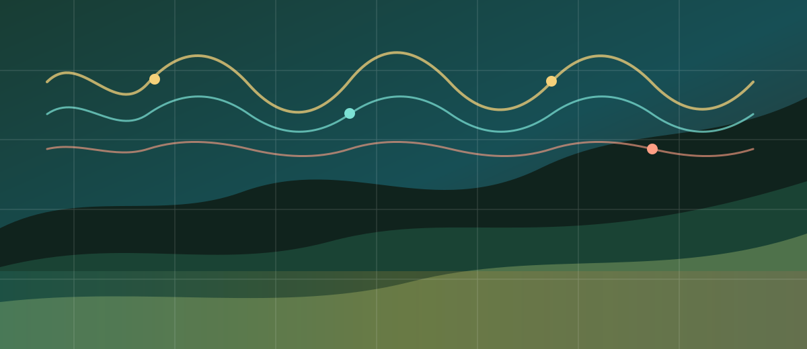

Pilot Acoustic Biodiversity Survey
Studio UI v2BioSignal field console

Active deployment
Loading project
Model state
Checking
Review queue
0
Exports
CSV ready
Evidence chain
Upload -> BirdNET adapter -> Detections -> Review -> Export
Prototype indicator
--
Biodiversity activity score
Species richness
--
Noise score
--
Sites--
Audio files--
Detections--
Model Runner
BirdNET integration
- Runner
- Pending
- Min confidence
- --
- Outputs
- --
Operational state
Waiting for data
Review queue
0
API
Checking
End-to-end loop
Awaiting data
Last synced
--
Metric status
Prototype only
Recording hours
0.00
Detections/hour
0.0
Confirmed
0%
Site Explorer
Monitored habitats
Field Geography
Habitat monitoring map
Waiting for site coordinates.
Map loading
Mapped sites
0
Audio coverage
0
Top location
Pending
Processing
Job queue
Uploaded
Queued
Processed
Reviewed
Completed0
Failed0
| Status | Type | Audio |
|---|
Normalized Results
Detections
| Label | Type | Confidence | Window | Review |
|---|
Traceability
Raw model outputs
Grant Ready